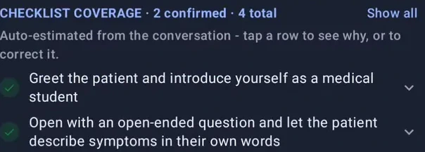
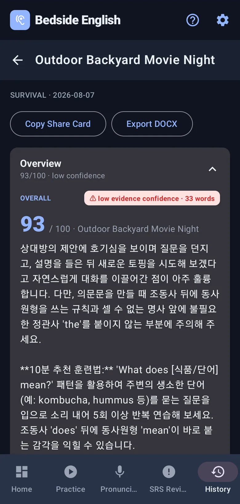
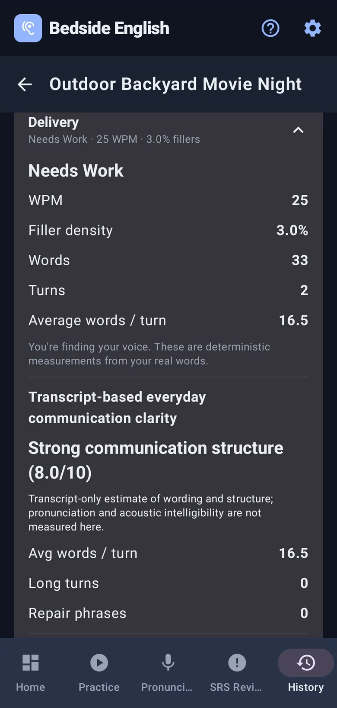
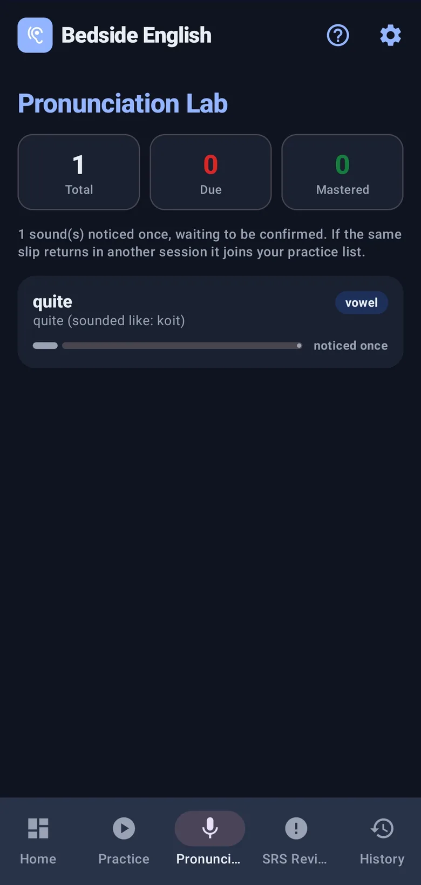
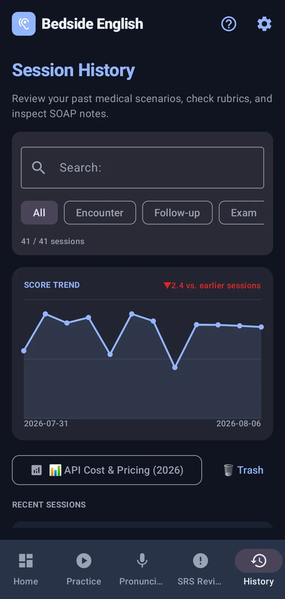
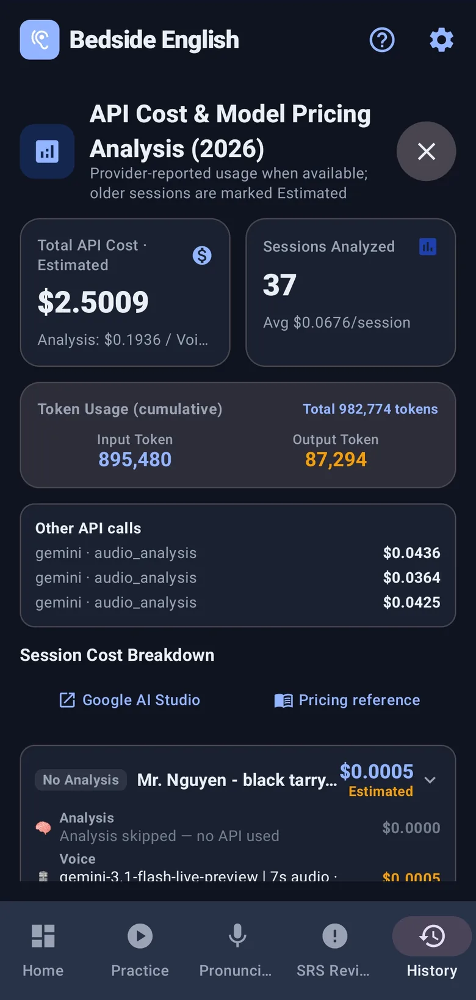

Clinical English practice for IMGs, medical students, and healthcare professionals
Speak in the clinic.Keep going in real life.
Talk to AI patients in your own words. The patient answers out loud, the clinical checklist updates from what you actually covered, and your exact mistakes return as tomorrow’s speaking practice. A full Everyday English mode is included for life outside the clinic.
- $0 charged in our testing · Gemini Free Tier
- No credit card
- No Bedside English account
Available now on Google Play.

You know the words.They just don’t come when you need them.
Practice answering out loud before you translate—in clinical encounters and everyday situations.
One practice loop, five steps
One live conversation. One exact fix. Then say it again tomorrow.
Speak in an unscripted scene, get the one correction that matters first, then meet it again as a new speaking task. Every screen below is a real Android capture — pick any step.
-
Talk to an AI patient in your own words. The checklist marks what you actually covered; if you dry up, a question idea and the Open Book are one tap away. Everyday mode uses the same live voice and unscripted conversation engine in non-clinical scenes.
-
At an airport gate, you may choose to go to the information desk alone. Remember the new boarding time and gate, then come back. The AI asks what you learned — now you have to relay it in English. The conversation can also move somewhere else, skip ahead in time, or bring in someone new, and you decide whether each change happens.
-
Naturalness, interaction, comprehension and fluency, each out of 100 and each measured from what you really said. One error is marked "Fix this first" and explained in your own language.
-
Say "quite" so it lands closer to "koit" and the app hears it. It becomes a minimal-pair drill, and you have to identify the sound three times in a row before it lets you try saying it — you can only fix a sound you can hear.
-
The correction becomes a spaced card — but you do not flip it and nod. You are dropped into a new situation and asked to say the corrected sentence out loud before you can mark it as learned.
What you leave with
Not "good job". The sentence, and why you got it wrong.
- What you saiddoes the nutritional yeast means
- What to saydoes nutritional yeast mean
Korean has no articles, which often leads to inserting "the" before general nouns — and "does" already carries the tense, so the main verb stays bare. The app names the rule and the first-language habit behind it, in your own language.
After the conversation
The conversation ends. The practice doesn’t.
Review your coaching, fluency, pronunciation findings, session history, and cost estimates — all from real practice sessions.

One score, then coaching

How you actually sounded

A drill list you did not write

Every session, searchable

Cost, in the open
Free to use. Nothing to subscribe to.
Demo Mode needs no API key. For live AI practice, create a Gemini Free Tier key with your Google account — no credit card or billing setup required. Every practice session shown here stayed within that tier, so $0 was charged.
- No subscription
- No Bedside English account
- No ads
- Open source
The app still shows estimated paid-tier equivalents per session, so potential costs are visible before you enable billing. Google sets Free Tier model availability and limits.
Is Free Tier really free? →Before you download
The awkward questions.
Can I try it without an API key?
Yes. Demo Mode ships with three scripted patients and runs immediately — no key, no account, no network setup. It is there so you can see whether the flow suits you before deciding anything.
Why do I have to bring my own Gemini key?
Because it keeps the app subscription-free. Create a Gemini Free Tier key with your Google account — no credit card or billing setup required. You only add payment details if you later choose the Paid Tier. Every practice session shown here stayed on the Free Tier, with $0 charged, and the key stays encrypted on your phone.
Is the Free Tier actually free?
Mostly, with one catch: no card is required, but Google may use your free-tier prompts and responses to improve its products, and real rate limits apply — reset on a fixed clock time, not a countdown. See exactly how it works, sourced to Google's own docs →
Can I practice everyday English too?
Yes. Survival English is a full everyday mode where scenes can move, time can jump, and new people can enter. You may even run an errand, remember what you were told, and report it back — with the same live voice, feedback, pronunciation work, and spaced review.
Where do my recordings and transcripts go?
Your session history is stored on your device. When an AI feature needs it, the required audio, text, and exercise context go directly to Google under your own key — not through a Bedside English account or practice server. There are no ads, and telemetry is inactive in the current release.
Is this a medical device?
No. It is an English-speaking practice tool. The clinical checklists exist to give the conversation a shape, not to teach medicine or support any real clinical decision.
Next time, let the English come out first.
Practice clinical English aloud with AI patients, then keep the same speaking habit in Everyday mode. Free on Android with no Bedside English account required.
Available now on Google Play.
View source on GitHub